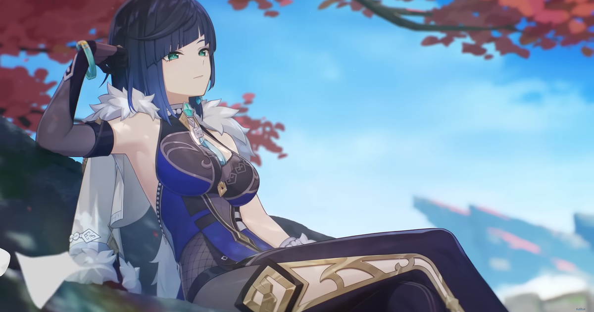

De primeira quando o visual dela foi anunciado chamou a atenção de muitos players por ter uma aparência mais simples porém com muitos detalhes,como por exemplo em seu shorts que fica embaixo de seu vestido, ele tem muitos detalhes, como trabalhado de coraçoẽs que fazem um charme total para a roupa (mesmo nao aparecendo)
É uma personagem lançada recentemente e é voltada para ser suporte e muitos afirmam que ela mudou um pouco o jeito de jogar, pois sua jogabilidade é muito diferente e versátil comparada aos outros suportes no jogo ar agora.Tirando isso ela tem um desing incrível com peças de roupa muito detalhadas também e o que mais chama atenção é um casaco e lendo a história você acaba percebendo o porque da peça chamar atenção (porquê é proposital pois ele é roubado, assim mostra como é a personalidade da personagem)
